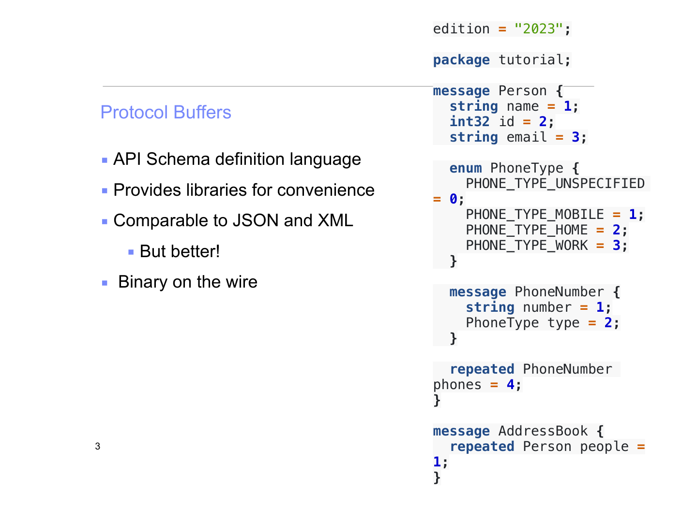

Protocol Buffers and API Design
Lecture 3, Part 1 — From Real-World Systems to Efficient Serialization
Uber's Docstore: When Schemaless Grows Up
Before we talk about protocol buffers, we need to understand why they matter. The best way to do that is to look at real systems that had to make hard choices about how data is structured, stored, and communicated between services. Uber's Docstore is one such system.

Uber originally built a storage layer called "Schemaless" — a system designed to be extremely flexible, letting engineers store data without rigid table definitions. As Uber scaled to millions of rides per day across dozens of cities, that flexibility became a liability. They needed stronger guarantees. Docstore is the evolution of that system: a distributed SQL database that keeps the flexibility of document-style storage while adding the reliability features you would expect from a traditional relational database.
The Six Pillars of Docstore
Docstore is built around six core capabilities that together solve the challenges of running a planet-scale data store:
Each shard of data is stored in MySQL, and Raft consensus ensures that replicas of that shard agree on the order of writes. Think of it like a small democracy within each shard: the replicas vote on what happened and in what order, so even if one replica dies, the others carry on with a consistent view of the data. Transactions are "shard-local," meaning they only need agreement within one shard, which is much cheaper than a global distributed transaction.
Uber operates in cities all over the world. Having a single data center in Iowa serving ride requests in Mumbai would mean unacceptable latency. Geo-replication copies data across data centers in different geographic regions so that reads (and sometimes writes) can be served locally. This is a classic tradeoff: you gain speed but must carefully manage the consistency of copies that may be slightly stale.
A rider has many trips. A trip has many waypoints. A driver has many vehicles. These one-to-many relationships are so fundamental that Docstore builds them directly into the storage model rather than leaving them to application code. This is similar to how a social network might model "a user has many friends" at the storage layer rather than doing repeated lookups.
This is the heritage from "Schemaless." Documents can have varying fields — not every ride record looks identical. A ride in New York might have toll information; a ride in a small town might not. The key insight is that flexible schema does not mean no schema. There is still structure, but it can evolve without painful migrations.
Pre-computed query results stored as actual tables. If the analytics team constantly needs "total rides per city per day," rather than computing this from raw data every time, Docstore can maintain a materialized view that updates incrementally. This trades storage space and write-time computation for dramatically faster reads.
Every change to the database is emitted as an event stream. Downstream systems — search indexes, analytics pipelines, machine learning features — can subscribe to these events and react in near real-time. This decouples the database from the systems that depend on it, making the overall architecture more resilient.
Lessons from Docstore
There is also a pragmatic lesson here: operational reality may not be "beautiful." The architecture that wins in production is not always the one that looks cleanest on a whiteboard. Docstore uses MySQL (a 30-year-old relational database) under the hood, wrapped in Raft consensus, sharding logic, and document-model abstractions. It is a layered system built from proven components, not a from-scratch rewrite. This is a pattern you will see again and again in real-world systems engineering.
Uber's Next-Gen Push Platform on gRPC

Now consider a different problem at Uber: how do you push real-time updates to millions of driver and rider apps simultaneously? When a rider requests a ride, nearby drivers need to be notified instantly. When a driver accepts, the rider needs to know immediately. When the driver's location changes, the rider's map must update in real-time.
The traditional web model is request/response: the client asks a question, the server answers. This works great for loading a web page or submitting a form. But real-time push notifications are fundamentally different — the server needs to initiate communication, and data flows continuously, not in discrete question-answer pairs.
From REST-like to RPC-like
REST (Representational State Transfer) is the dominant paradigm for web APIs. You make HTTP requests to
URLs that represent resources: GET /trips/123 retrieves trip 123, POST /trips
creates a new trip. It is simple, well-understood, and works with any HTTP client.
But REST has limitations for high-performance, real-time systems. Every request carries HTTP headers, content negotiation, and other overhead. There is no built-in concept of streaming. The text-based nature of JSON payloads adds serialization cost.
RPC (Remote Procedure Call) takes a different approach: instead of manipulating resources via URLs, you call functions on a remote server as if they were local. gRPC, developed by Google, is a modern RPC framework that uses HTTP/2 for transport and Protocol Buffers for serialization. It supports four communication patterns:
- Unary: Simple request/response (like REST)
- Server streaming: Client sends one request, server sends a stream of responses
- Client streaming: Client sends a stream of messages, server responds once
- Bidirectional streaming: Both sides send streams of messages simultaneously
Why does the transport layer matter?
It is tempting to think that the "interesting" parts of a system are the algorithms and data structures, and that how bytes travel over the network is a boring implementation detail. Uber's experience shows otherwise. Transport is as important as anything else. The choice of HTTP/2 (which supports multiplexing and header compression) versus HTTP/1.1 (which does not) can mean the difference between a system that scales to millions of concurrent connections and one that collapses under load. The choice of binary serialization versus JSON can cut bandwidth costs in half.
Protocol Buffers: A Better Way to Describe Data

We have now seen two real systems at Uber that need efficient, well-defined ways to describe and transmit data. This brings us to Protocol Buffers (often called "protobuf"), created by Google and used as the serialization format in gRPC and countless other systems.
.proto file, and the protobuf
compiler generates code in your language of choice (Python, Java, Go, C++, and many others) to read and
write that data efficiently.
At its core, Protocol Buffers serve three roles:
-
An API schema definition language. The
.protofile acts as a contract between services. If one team writes a service that producesPersonrecords, and another team writes a service that consumes them, the.protofile is the single source of truth for what aPersonlooks like. -
A library generator for convenience. From a single
.protodefinition, you get auto-generated classes with getters, setters, serialization, and deserialization methods in whatever language you need. No hand-writing parsers. - A compact binary wire format. Unlike JSON or XML, protobuf encodes data in a binary format that is smaller and faster to parse. It is comparable to JSON and XML in what it can express, but significantly more efficient on the wire.
Anatomy of a Proto Definition
Let us look at a classic example — defining a person and an address book:
Example: Person and AddressBook
A Person message has a name (string), an id (integer), and
an optional email (string). Each person can have zero or more phone numbers, where each
PhoneNumber is itself a message containing a number string and a
PhoneType enum (MOBILE, HOME, or WORK). An AddressBook is simply a
repeated list of Person messages.
Notice how each field has a numeric tag (like = 1, = 2). These tags are
what actually appear in the binary encoding — not the field names. This is one of the key reasons
protobuf is so compact: the string "name" never appears on the wire; only the integer
1 does.
.proto file. The built houses are the generated code in Python, Java, or Go.
JSON vs. Protocol Buffers: A Size Comparison

To make the efficiency difference concrete, let us encode the same person record in both JSON and Protocol Buffers and compare the results.
JSON Encoding
The JSON representation includes field names as quoted strings
("name", "id", "email"),
structural characters ({ } , :), and values encoded as
human-readable text. The integer 1234 is stored as the
four ASCII characters '1', '2', '3', '4'.
Total size: 105 bytes
Protobuf Encoding
The protobuf encoding uses integer tags instead of field name strings,
varint encoding for integers, and no structural delimiters. The number
1234 is stored as a two-byte varint, not four ASCII characters.
Total size: 45 bytes
That is a 57% reduction in size for the same data. At Uber's scale — billions of messages per day — that difference translates directly into bandwidth savings, lower latency, and reduced infrastructure cost.
Why Is Protobuf Smaller?
The size difference comes from four specific design decisions:
| Aspect | JSON | Protocol Buffers |
|---|---|---|
| Field names | Full strings on every record ("name", "email") |
Small integer tags (1, 2, 3) |
| Integer encoding | ASCII digit characters ("1234" = 4 bytes) |
Varint encoding (1234 = 2 bytes) |
| Schema required? | No — self-describing | Yes — .proto file needed |
| Human-readable? | Yes — you can open it in a text editor | No — binary, requires tooling to inspect |
Varint Encoding: A Closer Look
Varint (variable-length integer) encoding is a clever trick. Small numbers take fewer bytes than
large numbers. The number 1 takes just a single byte. The number 300
takes two bytes. The number 1234 also takes two bytes. In contrast, JSON always
represents numbers as ASCII text, so 1 takes one byte but 1234 takes
four bytes — and that does not even count the surrounding quotes if the number is treated as a
string.
This is particularly impactful for fields like IDs, counts, timestamps, and enumerated types, which appear in nearly every message in a large distributed system.
The Tradeoff: Schema as a Requirement
Nothing is free. The price of protobuf's efficiency is that both the sender and receiver must have the
.proto schema to make sense of the data. If you receive a blob of protobuf bytes without
the schema, you cannot easily determine what it means — unlike JSON, where field names are right there
in the payload.
Connecting the Dots
This is where everything ties together. Uber's Docstore needs efficient data serialization for geo-replicated writes across continents. Uber's push platform needs compact messages for millions of concurrent streaming connections. Protocol Buffers provide both: a rigorous schema definition (so teams agree on data formats) and a compact binary encoding (so the network is not the bottleneck). The schema requirement is not a drawback — it is a feature. It forces teams to explicitly define their data contracts, which reduces bugs and makes systems easier to evolve over time.
Key Takeaways
- 1. Real systems drive design choices. Uber's Docstore shows that "schemaless" eventually needs structure, and that production systems are built from layered, pragmatic components — not elegant abstractions.
- 2. Streaming changes the communication model. Not everything is request/response. Real-time systems like Uber's push platform need continuous, bidirectional data flow, which gRPC and HTTP/2 provide.
- 3. Transport and serialization matter. The difference between JSON and protobuf (105 bytes vs. 45 bytes for the same record) compounds at scale into massive infrastructure savings.
- 4. Schemas are contracts, not constraints. Protocol Buffers require a schema, but that schema serves as documentation, a compatibility check, and an optimization opportunity all at once.
- 5. Don't reinvent the wheel. Adopt proven, open-source infrastructure (gRPC, protobuf, Raft) and spend your engineering effort on what makes your system unique.